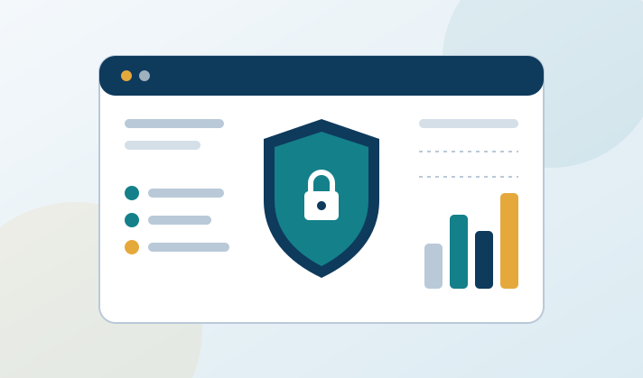

Cyber risk is now business risk. Regulators increasingly expect organisations to show, through independent audit, that their information systems, customer data and critical applications are adequately protected. Insurers and insurance intermediaries under IRDAI’s Information and Cyber Security Guidelines, and regulated entities in GIFT IFSC under IFSCA’s cyber security and cyber resilience guidelines, are required to have their cyber security audited every year. AVKAS & Co. approaches cybersecurity with an auditor’s discipline: we map your policies, processes and technical controls to the requirements that apply to you, test whether they work in practice, and turn the results into a clear, prioritised plan of action.

Our IT Audit and Cybersecurity team brings hands on experience in digital forensics, incident response, security monitoring and network security. Every engagement follows a structured path, from scoping and gap assessment to control audit, vulnerability testing, reporting and reverification, so management receives not just a list of findings but confirmation that critical gaps have been closed. We plan all testing with your IT team to avoid disruption to business operations, and keep our recommendations practical. Clients receive clear, prioritised reports written for boards, audit committees and the stakeholders who rely on them.
Our Range of Services:
- Regulatory Cyber Security Gap Assessments (IRDAI, IFSCA)
- Cyber Security Audits – Governance, Access, Server, Network and Data Controls
- Vulnerability Assessment & Penetration Testing (VAPT) of Web Applications, Servers and Networks
- Firewall, Server and Network Configuration Reviews
- Incident Response Readiness, Business Continuity and Third-Party Risk Reviews
- Remediation Support, Re-verification and Board-Ready Audit Reports